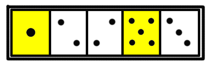

（シスマ研究部門）
麻雀工学科
水準：
麻雀を数理的に研究する充分な素養と技術・興味があり、実力もある。
麻雀の問題設定を自ら行い、それに基づいて研究・実装・解決する能力を有する人材を募集。
システマティック麻雀工学を推進し発展させる水準。
試験方式：
ＣとＤで4点かつＡＢＣＤＥの合計8点に達した人のみ入学可能
麻雀研究学科
水準：
麻雀に関する様々な話題に関して考察することができ、研究の補助を行うのに充分な能力がある。
モデルの提案や計算の実行などを行う能力・技術を有する。
試験方式：
ＡＢＣの合計で5点、またはＣＤＥの合計で5点、またはＡＢＤＥの合計が6点に達した人が入学可能。
麻雀文化学科
水準：
思考力・文章力・発想力に優れ、麻雀について正しく語る能力がある。
試験方式：
Ｄで2点、かつＡＢＣＤで合計5点で入学可能。
（シスマ技能部門）
プログラム技能科
水準：
麻雀についての興味があり、アルゴリズム提供などで活躍できる水準。
試験方式：
Ｃで2点以上、またはＣで1点に加えＤかＥ1点以上で入学可能。ただし麻雀に関する最低限の知識を有していることが条件。
毒舌議論技能科
水準：
麻雀を語り、馬鹿を嫌すことができる。
試験方式：
Ｄに2点で入学可能。
麻雀技能科
水準：
高いレベルの麻雀ができる。
試験方式：
Ｅに2点で入学可能。
免除
MSNの会話等で、充分な能力が認められている人に対しては試験の一部は免除される。
過去の合格者リスト
試験Ａ バイマンキン（2点免除） がじろう（2点合格）
試験Ｂ バイマンキン（2点免除） がじろう（2点免除）
試験Ｃ 紅孔雀さん（2点合格）
試験Ｄ バイマンキン（2点免除） 紅孔雀さん（1点免除）
試験Ｅ
現在の在学者リスト
（学科）
麻雀工学科 とつげき東北（自推）
麻雀研究学科 バイマンキン（推薦）
麻雀文化学科
（技能科）
プログラム技能科 紅孔雀さん（推薦）
毒舌議論技能科
麻雀技能科
（なお非常にシビアです。特に麻雀研究学科以上の在学者は全て、どんなそこらの自称上級者よりも教養があり、実力があり、数学ができ、麻雀について深く考察することができます）
数学思考能力試験 （解答時間制限 150分程度）
極限値の計算に必要である場合、次の、ｎ！の近似式（スターリングの公式）を用いてよい。
近似の際には、左辺と右辺を等号で結んでよい。

注意： この試験問題において ^ はべき乗の記号であり、a^b は aのb乗を意味する。
得られた数値や式は、特に約分したり整理する必要はない。
１
20項からなる数列をメモした紙がある。
an = ｛1,2,3,4,5,6,7,8,9,○,11,12,13,14,15,16,17,18,19,20｝
○の部分は紙が汚れていて見ることができない。
この数列の一般項 an （nは自然数）の定義域を実数全体に拡張し ｆ（n） （nは実数） と書くとすると、an=ｆ（n） は定義域全体に渡って連続であり、またnについてのただ一つの多項式で表されるものとして、以下の各問に答えよ。
問１）
関数ｆ(x)がx=aで連続であることの定義を書け。
問２）
○の値は一意に定まるか、定まらないか。答えだけ記せ。
問３）
問２の解答を証明せよ。
また、問２で定まるとした者は、 an の一般項を求めよ。
問２で定まらないと解答した者は、○の値がα（任意の実数定数）となるような an を求めよ。
２
以下のようなゲームを行う。
・コインを投げて表が出たら1円もらう
・裏が出たら1円失う
資金0円からスタートして、資金が負になっても好きなだけ（やりたければ無限に）ゲームを続けることができるとする。
また、もし目標の金額がたまれば、即座にゲームをやめることができる。
例えば、ゲームを始めてから3回連続裏が出て、その次に1回表が出ると、資金は-2円になる。
これについて以下の各問に答えよ。
問１）
8回ゲームをするまでの間に、資金が一度も1円以上にならない確率を求めよ。8回より前にゲームを中断はしないものとする。
問２）
このゲームを資金0から開始した人は誰でも、いつか必ず（確率1で）資金を+1000000円にすることが可能であるか、不可能であるか。答えだけ記せ。途中であきらめてゲームを中断する場合や、ゲームにかかる時間は考慮しないものとする。
問３）
問２の解答を証明せよ。
研究適性試験 （解答時間制限 60分程度）
本試験は、麻雀研究に付随する様々な状況を、数学的に解決可能な形でモデル化する能力を測る試験である。
１ （数的分野）
白色のサイコロが3つと、黄色のサイコロが2つある。
また、サイコロがちょうど5個おさまる、図のようなハコがある。
図は、サイコロを適当に5つつめた状態である。

問１）
ハコ自体の方向を変えたりひっくり返したりできないとして、このハコに5つサイコロをつめることを考える。
サイコロのデザインによっては、回転によって2通りの状態を表せるとする（図の2番目と3番目のような）。
ただし「1」「4」「5」は、デザインの都合で回転させても複数の状態を表すことができない。
このハコに5つサイコロをつめるとき、区別可能な状態は何通りあるか。
問２）
コインの裏表だけでこれと同じ数以上の区別可能な状態を作るとき、最低限必要なコインの枚数は何枚か。
式は計算せず、そのまま解答してよい。
問３）
この装置を活かして、円周率の近似値を計算したい。
方法の概略を論理的に記せ（誤差などの細かい要素は無視してよい）。
使える道具・知識は以下の通りである。
・サイコロをランダムにハコに並べる試行
・その結果や回数を記録する紙と鉛筆
・円の面積の公式（面積＝半径×半径×円周率）
・直径と円周との関係（円周＝直径×円周率）
・円の方程式の一般形
・その他、図形や関数や微分積分・各種計算等の知識（ただし円周率そのものに関する知識・三角関数に関する知識は除く）
問４）
なぜ上記方法で求めた近似円周率は実際の円周率と異なる値となるのか、その誤差を減らすためにはどうすればよいかを合理的に説明せよ（数式的な証明は不要である）。
２ （発想的分野）
0または1が10個並んだ数字列を考える。
数字列Ａ 1,1,1,1,1,1,1,1,1,1
数字列Ｂ 0,１,0,1,0,1,0,1,0,1
数字列Ｃ 1,1,1,1,1,0,0,0,0,0
数字列Ｄ 0,1,1,1,0,1,0,0,0,1
例えばこのような数字列である。
こうした数字列のうち、どれがランダムでどれがランダムでないかを定量的に調べる方法を考えよう。
問１）
「ランダムな数字列」を定義せよ。
問２）
有限な数字列が真にランダムであるのか、そうでない数字列の一部なのかを確実に判別することは可能か不可能か。合理的かつ簡潔に述べよ。
問３）
有限な数字列がランダムである可能性を定量的に判定するために、どのような方法が考えられるかを3通り列挙し、各々簡単に説明せよ（数式上の細かい計算は必要ない）。
ただし、それらの3通りの方法を全て用いれば、問題文にある4つの数字列のうちのＡ、Ｂ、Ｃを少なくとも1回ずつ「ランダムでない可能性が高い」と評価できるようにせよ。
問４）
問３で定式化した方法に対して、問題文にある4つの数字列を評価させた場合、どのような評価になるか述べよ（細かい確率計算等は不要）。
プログラミング能力基礎試験（Ｃ言語） （解答時間制限 45分程度）
本試験は、モデル化された様々の問題をコンピュータに実装するための基礎知識を問う試験である。
なお、プログラム部分は、日本語のアルゴリズムで記述してもよい。厳密に手続きが示されていれば可とする。
１
問１）
整数の1〜nまでの和を計算するプログラムを書け。詳細部分は省略してよい。
問２）
n!（nの階乗）を求める再帰的関数を書け。
問３）
Ｃ言語によって書かれた次のような関数がある。入力値（A,B,C、ただし全て0か1のブール値）の組み合わせに対するDの値を記述せよ。
D=（（A||B）&&（B&&C））||（A&&B）||（A||C）;
問４）
次のような入出力関係を持つ論理式を記述せよ。
入力 出力
ABC D
000 0
001 1
010 0
011 0
100 0
101 0
110 1
111 0
問５）
次のプログラムを実行したとき、表示される文字列を記せ。
int i;
char s[50],t[50];
for(i=0;i<50;i++)
{
s[i]='A';
}
s[10]='\0';
s[5]='B';
s[15]='B';
for(i=0;i<=15;i++)
{
t[i]=s[i];
}
for(i=0;i<50;i++)
{
if(!((t[i]=='\0')||(i==50)))
{
t[i]を表示。
}
else break;
}
２
ある整数配列A[i]が存在し、要素数は1000、各要素の値は0〜255の間にある。
この配列をソートしてA[i]に戻すために、以下のようなプログラムを書いた。
int i,index;
int B[256];
for(i=0;i<1000;i++)
{
？？？？（1）
}
for(i=0;i<1000;i++)
{
index=A[i];
B[index]++;
}
for(i=0;i<1000;i++)
{
A[i]=0;
}
for(i=0;i<256;i++)
{
for(index=0;index<B[i];index++)
{
？？？？（2）
}
}
問１）
？？？？（１）に入れるべき命令文を記述せよ。
問２）
？？？？（２）に入れるべき命令文を記述せよ。
問３）
要素の値が0〜255ではなく0〜65535であれば、この場合と方法論は変わるか。また要素の値が0〜2^32-1であればどうか。
変わるならばその理由を書き、どのように解決すればよいか簡単に記述せよ。
問４）
この問題で扱ったソート方法と違う方法でソートするソートプログラムを提示せよ。
問５）
この問題で扱ったソートはかなり高速である。
高速になる理由を、他のソート方法と比較して明確に記述せよ。
麻雀思想・論理展開能力試験 （解答時間制限 150分程度）
本試験は麻雀議論に関する理解力・分析力・文章力・論理展開力・表現力等を総合的に判断する試験である。
数理的な知識や背景は、最低限度のもの以上は必要としない。
全て解答の文字数は任意である。必要十分な分量を記述するとよい。
１ （流れとオカルトに関する問題）
人間の認識には、コインを連続して投げると予想以上に裏が連続したり表が連続したりするように感じる「偏りの錯誤」と言われる直感的錯覚があることが実験的に明らかにされている。
これに対して、麻雀界やそれに近い非知的世界においては、「流れ」と呼ばれる現象があるとみなされる風潮がある。
麻雀界においては連続して失敗したり成功したりする現象は、確率的な問題ではなく「流れ」のせいであると捉え、場合によっては「流れを読んで打ち方を変える」「流れを操って勝ちを目指す」ような方法が有用であると感じる人が多いのである。
問１）
麻雀の充分な試合数の試合結果が順位として並んでいる。例えば「1位、4位、2位、2位・・・」というように。
問題文を踏まえて流れを定義し、これを用いて流れが存在するか否かを定量的に判定する方法を例示せよ（数式的な厳密さは要求しない）。
問２）
単一の試合結果だけでなく、他の様々な要素から流れの存在について議論したい。
どのような指標で行えばよいか。１つ具体例を挙げ、そのメリットとデメリットについて記述せよ。
あなたの示した「流れ実験」で、流れはあるとは言えない結論が出たとする。
問３）
以下の各反論に対して、簡潔に説明または再反論せよ。
「確率の範疇の中にある偏りが、流れなのだ。そもそも君の実験は前提が違う」
「流れを信じていない人の結果に、流れがないのは当然だ。流れを信じている人の結果で行えばどうなるかわからない」
問４）
「流れはないとは言い切れないのではないか。結局は信仰の問題に戻ってしまうのではないか」
という言葉に対して、あなたはどのような立場を取るか。
賛成または反対の立場を明記した上で、問題点や背景にまで踏み込んで論ぜよ。
問５）
流れの存在に関する議論で、「よほど局面を限定しない限り『Ａの時にＢになる』のＡかＢもしくは両方曖昧になりそうです」ということから、流れの存在を定量化して検査する方向をそらされてしまった。
彼らが流れ（や、場）を読めているかどうかを、彼らと同じ程度のレベルの打ち手の牌譜と比較しデータにとって検証したい。
どのような指標を用いて検証すべきか考察し、方法論を記述せよ。
問６）
いわゆる「オカルト」「デジタル」を定義し、各々の反対の立場にたって各々を批判せよ。
２ （実力と麻雀界の知的水準に関して）
問１）
麻雀をしていて、放銃した瞬間に「やっぱりな」と毎回のように言う人がいる。
この人の技術・心理状態・周囲への影響について論ぜよ。
問２）
麻雀には様々な技術要素があり、また、麻雀の打ち手には様々なタイプがいる。
一般に麻雀をギャンブルとしてでなく知的ゲームとして捉えたときに、技術を向上させるために重要と思われることを論ぜよ。
ただし以下の各々のキーワードについて言及すること。
キーワード 「実力の計測」「実力の変化」「実力の向上」
問３）
なぜ麻雀界には自称上級者が多いのに、実力がある者は少ないのか。
技術や心理状態・背景に踏み込んで論ぜよ。
問４）
なぜ麻雀界の様々な戦術書や講座の類は一様に役立たないのか。
その理由や背景について簡単に述べよ。
問５）
なぜ麻雀界は発展しないのかを考察し、以下のキーワードのうちの少なくとも４つに触れつつ論ぜよ（４つ以上触れてもかまわない）。
キーワード 「権威」「偶然性」「実力」「麻雀プロ」「知的ゲーム」「ギャンブル」「社会的地位」
問６）
麻雀研究にとって有用と思われる数理的研究を１つ提示し、その理由や方法論、問題点を交えて検討せよ。
３ （ネット麻雀に関して）
問１）
ネット麻雀の登場によって麻雀界はどのように変化したか、あるいはしていくかを述べよ。
問２）
ネット麻雀と通常の麻雀において決定的に違うと思うことを挙げ、それについて論ぜよ。
問３）
「ネット麻雀では一発ツモが多い」と言われることが多いが、このような認識論的錯誤はなぜ生ずるか。決定的と思われる理由を挙げ、簡潔に説明せよ。
問４）
「ネット麻雀はしょせんゲームでしかない」「ネット麻雀と実戦麻雀は違う」という言葉をどう考えるか。同意または反対の立場を取って論ぜよ。